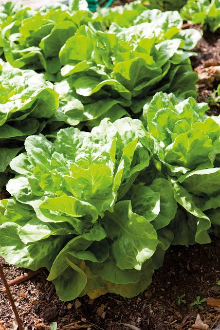
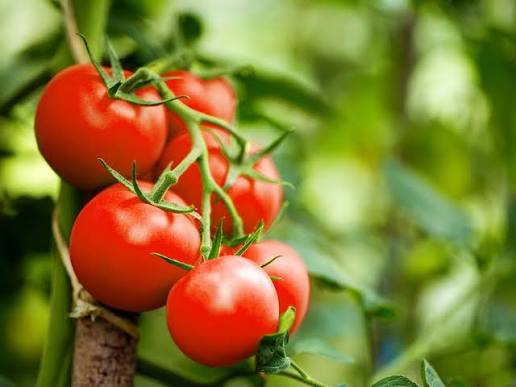
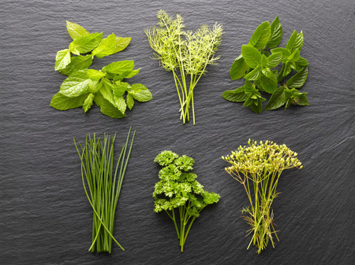

Conoce las principales plantas de nuestro huerto, sus características, beneficios y cuidados.
Lechuga | Tomate | Cebolla | Hierbas aromáticas
La lechuga es una planta hortícola de hojas verdes que se consume principalmente fresca en ensaladas, sándwiches y otros alimentos. Es muy utilizada en la alimentación por su sabor suave y su contenido de agua, vitaminas y minerales.
La lechuga aporta agua, fibra, folato y vitamina K. Como parte de una alimentación variada, contribuye a la hidratación y al consumo de vegetales.

El tomate es una planta hortícola que produce frutos carnosos, generalmente de color rojo cuando maduran. Se utiliza en ensaladas, salsas, sopas y numerosos platos. Es uno de los cultivos más conocidos y utilizados en el mundo.
El tomate aporta vitamina C, potasio y licopeno, un compuesto natural con acción antioxidante. Consumirlo como parte de una alimentación equilibrada ayuda a incorporar nutrientes importantes para el organismo.
La cebolla es una planta hortícola cuyo bulbo se utiliza ampliamente en la cocina. Su sabor y aroma característicos permiten condimentar carnes, sopas, ensaladas y otros alimentos. Puede tener una cubierta amarilla, blanca o morada.
La cebolla contiene fibra, vitamina C y compuestos vegetales como la quercetina. Se utiliza para dar sabor a los alimentos y puede formar parte de una alimentación saludable.

Las hierbas aromáticas son plantas que contienen sustancias naturales responsables de sus aromas y sabores. Sus hojas se utilizan para condimentar alimentos, preparar infusiones y aportar fragancia. Algunas de las más conocidas son el orégano, la hierbabuena, la menta, el romero y la albahaca.
El orégano es una planta de hojas pequeñas y aromáticas. Se utiliza principalmente como condimento en pizzas, salsas, carnes y ensaladas. Prefiere lugares soleados y suelos con buen drenaje.
La hierbabuena tiene hojas verdes y un aroma fresco. Se utiliza en bebidas, infusiones y diferentes preparaciones culinarias. Necesita humedad regular y puede extenderse rápidamente, por lo que es conveniente controlar su crecimiento.
La menta es una planta aromática de hojas verdes y olor refrescante. Se emplea en bebidas, postres y preparaciones culinarias. Prefiere suelos húmedos, pero sin encharcamiento, y puede cultivarse en macetas.
El romero es una planta de hojas estrechas y aroma intenso. Se utiliza para condimentar carnes, verduras y otros platos. Necesita buena iluminación y un suelo que permita drenar el exceso de agua.
La albahaca posee hojas verdes y fragantes. Se utiliza en ensaladas, salsas y preparaciones como el pesto. Crece bien en lugares iluminados, con temperaturas cálidas y riego moderado.
| Planta | Parte que se consume | Necesidad principal |
|---|---|---|
| Lechuga | Hojas | Humedad regular y clima fresco |
| Tomate | Fruto | Luz solar y riego regular |
| Cebolla | Bulbo | Luz solar y suelo bien drenado |
| Orégano | Hojas | Luz solar y buen drenaje |
| Hierbabuena | Hojas | Humedad regular |
| Menta | Hojas | Suelo húmedo y buen drenaje |
| Romero | Hojas | Buena iluminación |
| Albahaca | Hojas | Clima cálido y luz abundante |
Cultivar lechuga, tomate, cebolla y hierbas aromáticas en nuestro huerto institucional permite conocer el proceso de producción de los alimentos y aprender a cuidar los recursos naturales. También ayuda a desarrollar hábitos de responsabilidad, cooperación y respeto por el ambiente.
Además, cultivar nuestros propios alimentos permite observar las diferentes etapas de crecimiento, desde la germinación hasta la cosecha. Estas experiencias complementan los conocimientos adquiridos en el aula.
Aprendemos de la tierra para cuidar nuestro futuro.
Volver a la página principal